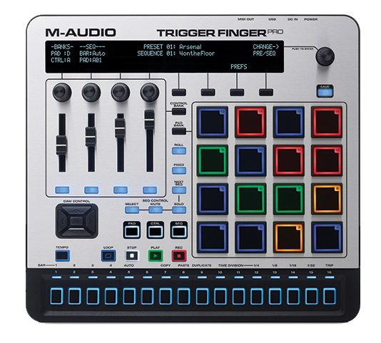
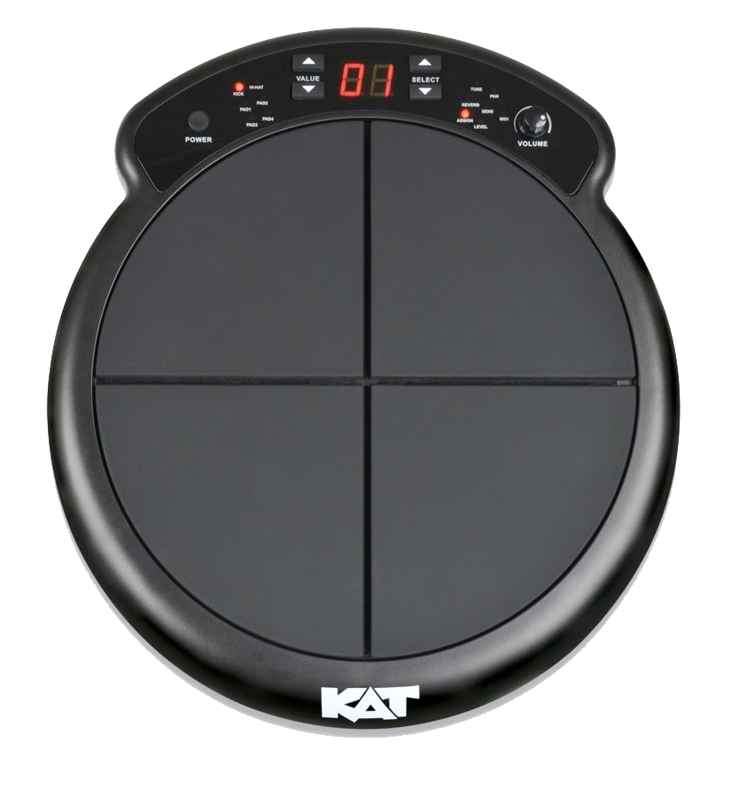
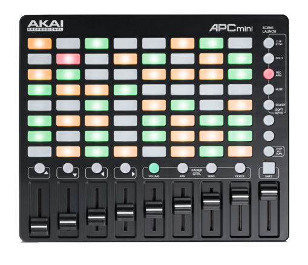

Untuk pengertian PAD sendiri adalah suatu MIDI Controller untuk memainkan beberapa efek PAD dimana efek PAD disini berguna sekali bagi seorang musisi seperti DJ atau yang lainnya. Dan ini adalah 3 contoh gambar PAD MIDI Controller :   